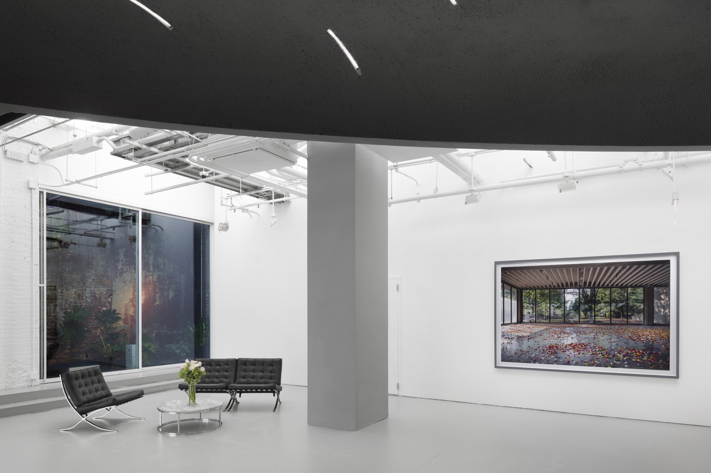
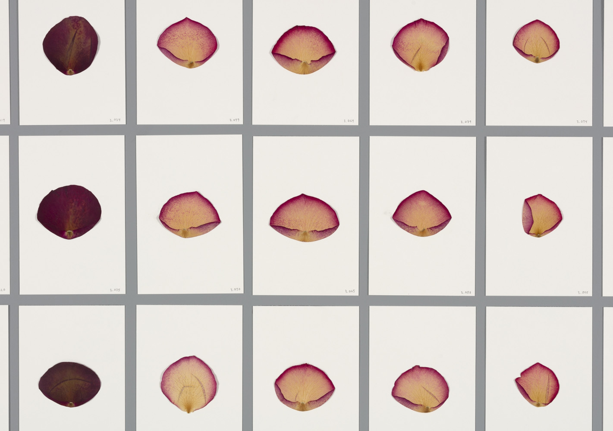
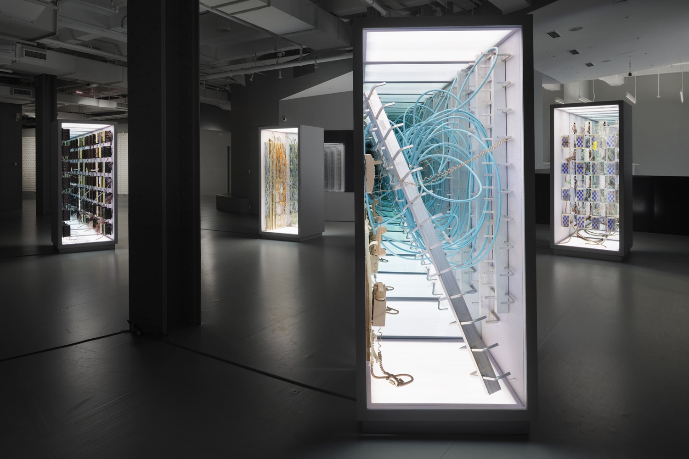
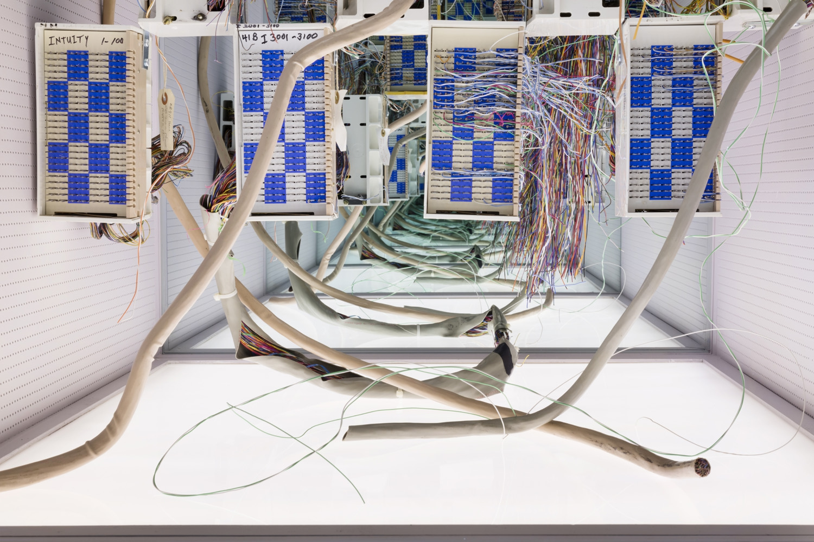

Sarah Meyohas: Clouds of Petals
Red Bull Arts New York, Associate Curator & Managing Editor
October 12 – December 10, 2017
Red Bull Arts New York, Associate Curator & Managing Editor
October 12 – December 10, 2017
For Cloud of Petals, 3,289 of these painstakingly preserved rose petals are fashioned into a mosaic as part of a large architectural intervention at Red Bull Arts New York. The archival wall reads as an elite rose petal taxonomy, funneling the viewer into the auditorium where the artist’s 30-minute 16mm film of the performance art piece shot on 16mm at Bell Labs, plays on a loop. In the main gallery, four ominous sculptures loom, dotting the large space like standing alien sarcophagi undergoing a ritualistic software update, encased using the salvaged modular steel walls from Bell Labs. Meyohas integrates an infinity mirror, a device she’s employed throughout her practice, as an infinite call and response where the boundaries of time and space seem unending. Lastly, visitors encounter the exhibition’s VR component: a series of gaze-based experiences that manipulates this organic data set for the viewer’s pleasure, featuring new, uniquely generated petals using AI and the 100,000 picture data set.

Installation view, Cloud of Petals, 99 x 69”, chromogenic print. Photography by Lance Brewer, 2017.
While the artist gestures toward lingering social commentaries relating to what has been traditionally associated with women’s work versus men’s work, the exhibition becomes a site for contemplation about a post-human reality and the future of labor in the face of automation. Meyohas serves up a weighty conceit, sincerely formalist in her intentions, yet rooted in a scientific rigor that suggests a certain faith in the potential of what is to come.

Installation view, Most Beautiful Petals, archive wall of 3,289 petals, Cloud of Petals. Photography by Lance Brewer, 2017.

Installation view of Sarah Meyohas: Cloud of Petalsat Red Bull Arts New York, 2017. Photo by Lance Brewer.
Bell Vitrines salvaged modular wall panels from Bell Labs, 87” x 37.5”, 2-way mirror, LED Lighting.
Bell Vitrines salvaged modular wall panels from Bell Labs, 87” x 37.5”, 2-way mirror, LED Lighting.

Installation view, Bell Vitrines, salvaged modular wall panels from Bell Labs, 87” x 37.5”, 2-way mirror, LED Lighting. Photography by Lance Brewer, 2017.